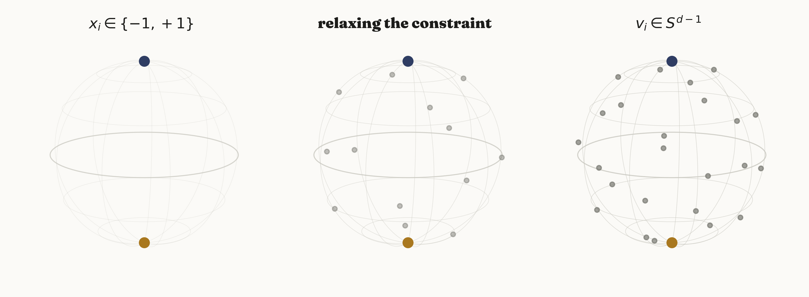
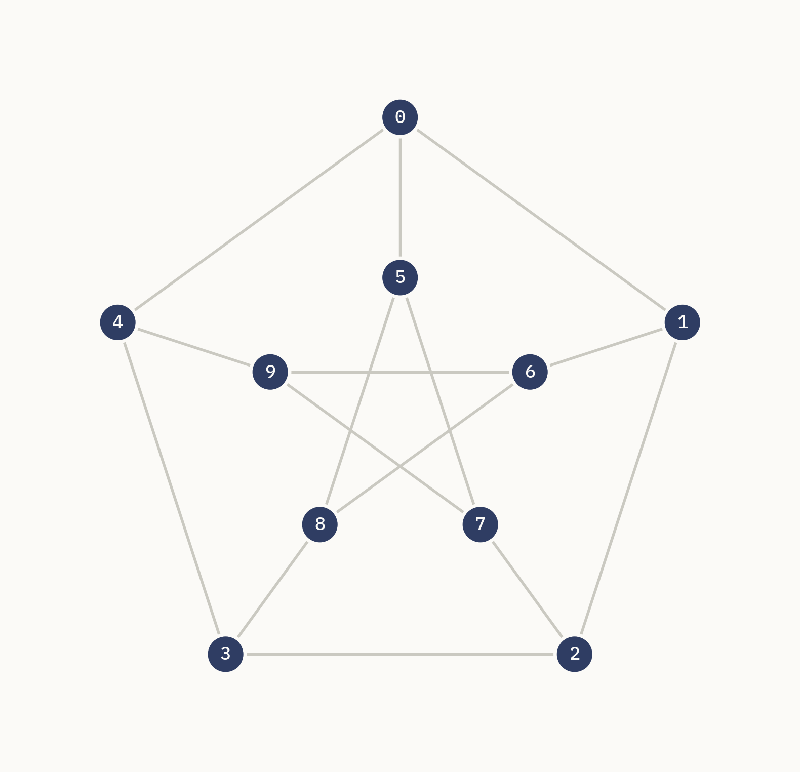
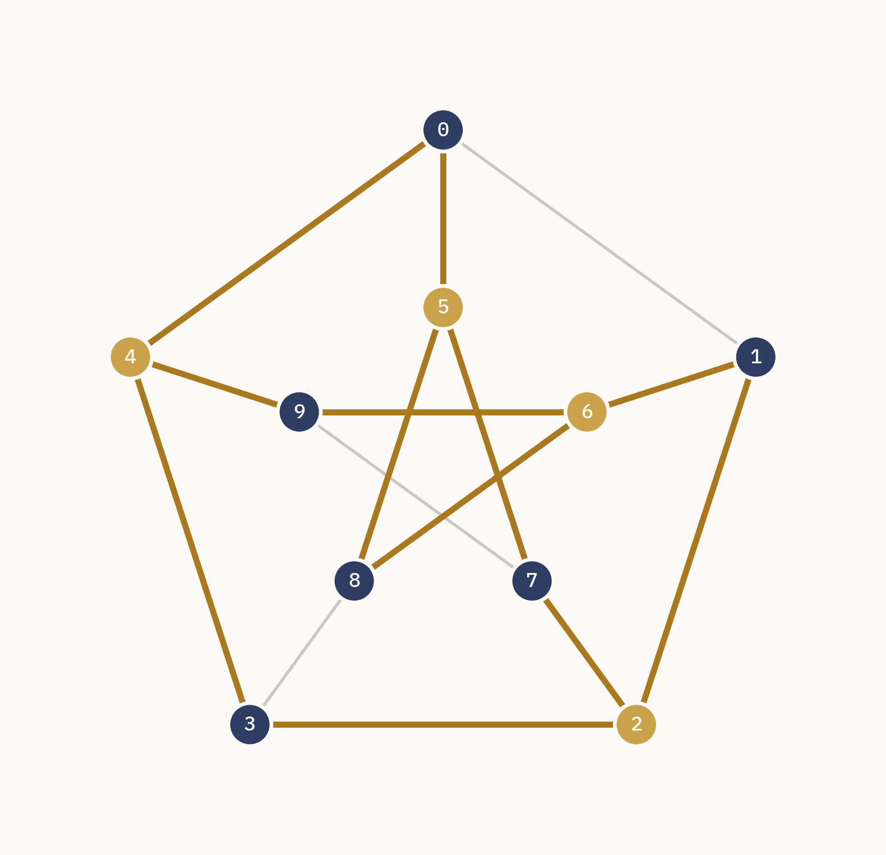
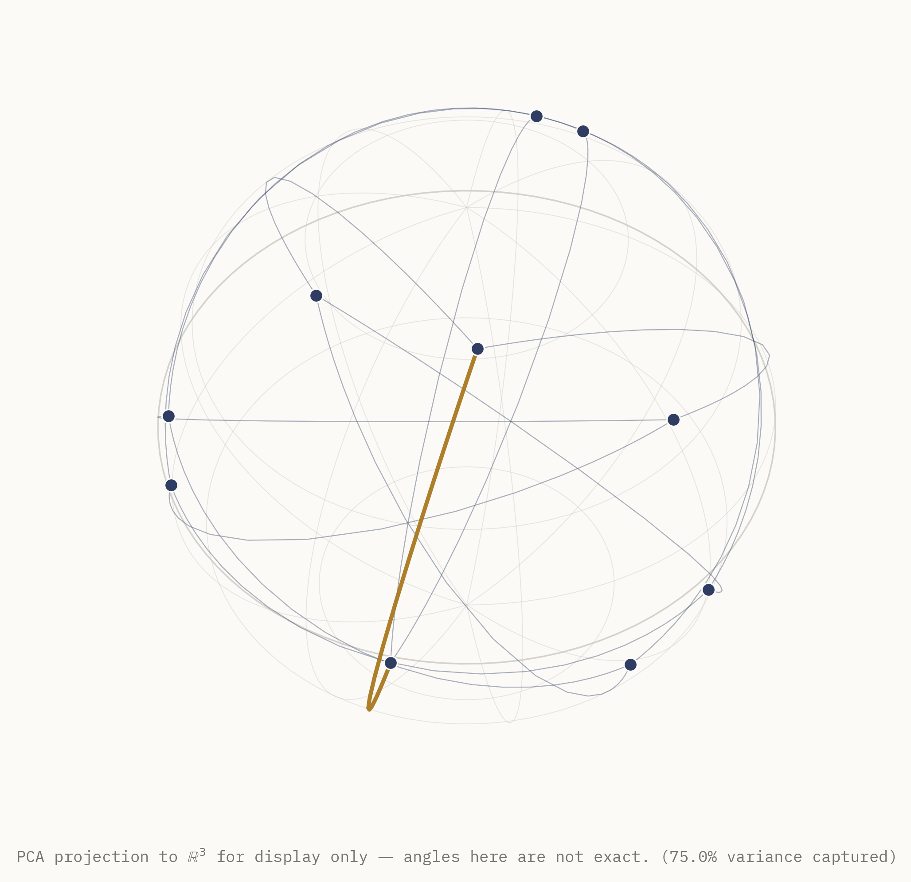
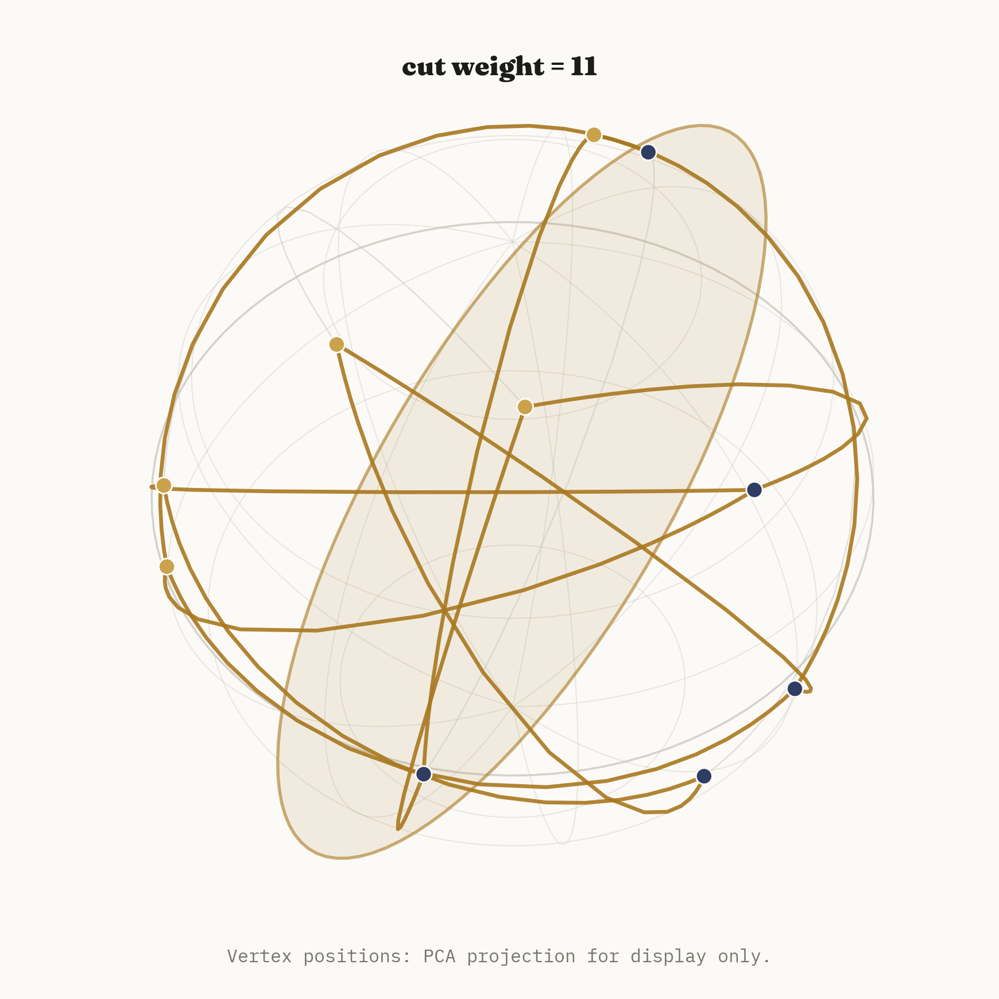
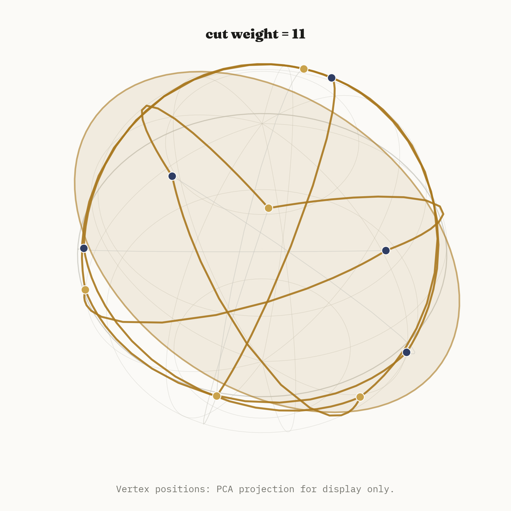
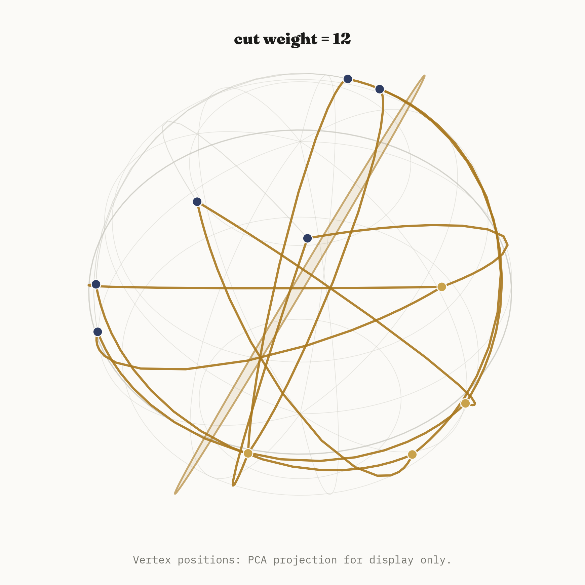
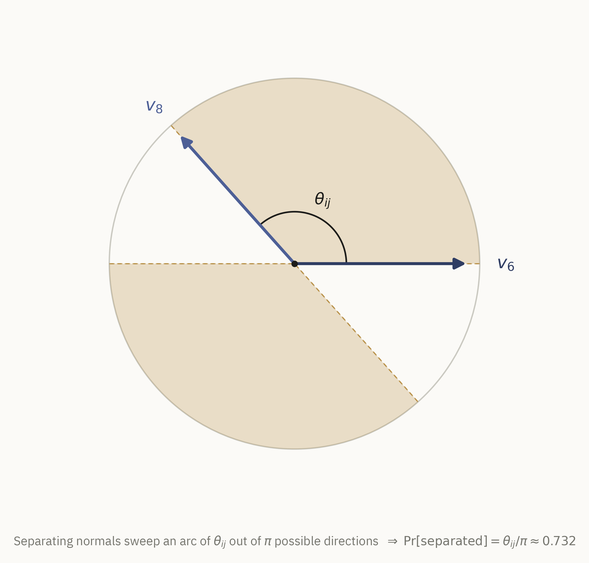
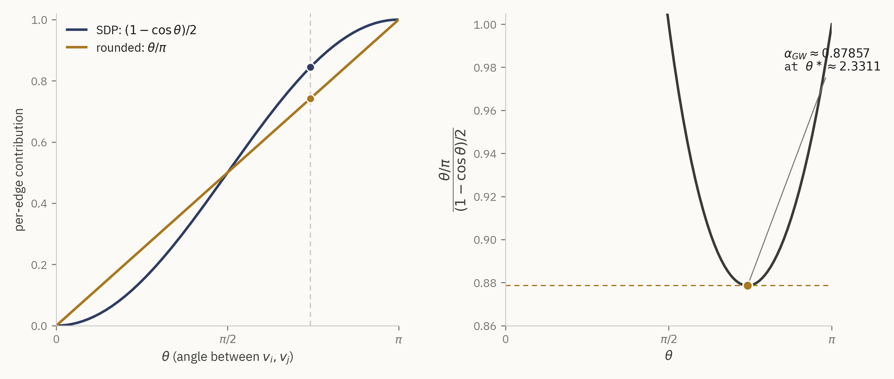
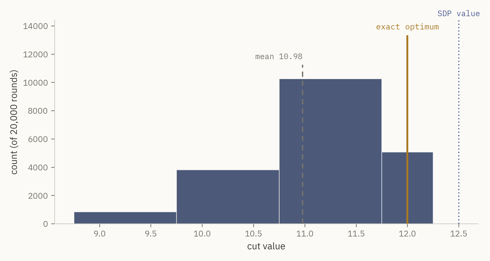

Max-Cut asks a simple question: given a graph, split its vertices into two groups so that as much total edge weight as possible crosses between them. It is also, in the technical sense, hopeless — one of Karp's original twenty-one NP-complete problems, with no known polynomial-time algorithm and (assuming P ≠ NP) no way to find the exact optimum on a large graph before the heat death of the universe. And yet in 1995, Goemans and Williamson showed you can get provably, quantifiably close to the optimum in polynomial time, using an idea that has nothing to do with graphs at first glance: forget the two-point constraint \(x_i \in \{-1, +1\}\) entirely, let each vertex become a point anywhere on a high-dimensional sphere, solve a convex program over that continuum, and then slice the sphere in half with a single random plane.
This note walks through why that works, end to end: the exact combinatorial problem, the relaxation that turns it convex, the geometric fact that makes random rounding analyzable at all, and the numeric constant \(\alpha_{GW} \approx 0.878567\) that the whole argument earns. Every number below is computed, not quoted — the code repository reruns the entire pipeline and reproduces every figure.
The problem, exactly
Fix a graph \(G = (V, E)\) with \(n = |V|\) vertices and non-negative edge weights \(w_{ij}\) for \((i,j) \in E\). A cut is a partition of \(V\) into two sets; write it as a labeling \(x \in \{-1, +1\}^n\), where \(x_i\) records which side vertex \(i\) is on. An edge \((i,j)\) is cut exactly when its endpoints disagree, i.e. \(x_i \ne x_j\), and the indicator \((1 - x_i x_j)/2\) is \(1\) precisely in that case and \(0\) otherwise. Summed over all edges, this gives the cut's total weight:
\[ \text{maximize} \quad \sum_{(i,j) \in E} w_{ij} \, \frac{1 - x_i x_j}{2} \qquad \text{subject to} \quad x_i \in \{-1, +1\} \ \ \forall i. \]
This is exactly Max-Cut, restated as a quadratic optimization over a discrete set. The discreteness is what makes it hard: with \(n\) vertices there are \(2^n\) sign assignments, and flipping every sign at once leaves the cut value unchanged (swapping the labels of the two sides doesn't change which edges cross between them), so there are \(2^{n-1}\) genuinely distinct candidate cuts to search over — exponential in \(n\), and no known shortcut through that exponential for general graphs.
For the small instance used throughout this note (10 vertices, hence 512 candidate cuts) exhaustive enumeration is trivial and exact. That number won't stay small for long: a 35-vertex graph already has more candidate cuts than atoms estimated in the observable universe. The relaxation below is what makes the problem tractable well past the point where brute force stops being an option.
From two points to a sphere
The constraint \(x_i \in \{-1, +1\}\) is really a constraint on where \(x_i\) is allowed to live: two isolated points on the real line, i.e. the sphere \(S^0\). The relaxation asks what happens if each \(x_i\) is allowed to be a point anywhere on a much bigger sphere instead — a unit vector \(v_i \in S^{d-1} \subset \mathbb{R}^d\), for \(d\) as large as \(n\) if needed. The product \(x_i x_j\), a scalar in \([-1, 1]\), becomes the inner product \(v_i \cdot v_j\), which lives in exactly the same range and reduces to the original product whenever every vector happens to collapse onto a single line through the origin (the rank-1 case, which is exactly the original \(\{-1,+1\}\) problem in disguise).

Substituting \(v_i \cdot v_j\) for \(x_i x_j\) in the objective gives a new optimization problem over unit vectors instead of signs:
\[ \text{maximize} \quad \sum_{(i,j) \in E} w_{ij} \, \frac{1 - v_i \cdot v_j}{2} \qquad \text{subject to} \quad v_i \in S^{d-1} \ \ \forall i. \]
This is still, on the face of it, a nonconvex problem — a sphere is not a convex set, and neither is the product of \(n\) of them. The move that makes it tractable is to stop tracking the vectors \(v_i\) directly and track only their pairwise inner products, packaged as the Gram matrix \(X_{ij} = v_i \cdot v_j\). Any collection of unit vectors produces a symmetric, positive semidefinite matrix with \(X_{ii} = 1\) on the diagonal; conversely, by a standard fact of linear algebra (every PSD matrix has a square root), any symmetric PSD matrix with unit diagonal can be factored back into vectors \(v_i\) whose inner products reproduce it exactly, via eigendecomposition of \(X\). So optimizing over Gram matrices is equivalent to optimizing over the vectors, and the constraint set for \(X\) — symmetric, PSD, unit diagonal — is convex, because positive semidefiniteness is a convex constraint (the PSD cone) and the diagonal constraints are linear. This gives the Max-Cut semidefinite relaxation:
\[ \text{maximize} \quad \sum_{(i,j) \in E} w_{ij} \, \frac{1 - X_{ij}}{2} \qquad \text{subject to} \quad X \succeq 0, \ \ X_{ii} = 1 \ \ \forall i. \]
The feasible set is convex and the objective is linear in \(X\), so this is a genuine semidefinite program, solvable to arbitrary precision in polynomial time by interior-point methods. Because every feasible rank-1 solution corresponds exactly to a \(\{-1,+1\}\) assignment, and the relaxation only adds feasible points (every rank-1 solution was already feasible; higher-rank ones are new), the SDP's optimal value can only be greater than or equal to the true integral optimum — it's an upper bound, not an estimate.
Solving the SDP hands back an optimal Gram matrix \(X^\star\), which is factored via eigendecomposition into unit vectors \(v_1, \ldots, v_n \in \mathbb{R}^d\) — one point on a high-dimensional sphere per vertex, encoding exactly how compatible or opposed the SDP "wants" each pair of vertices to be, through the angle between their vectors.
A concrete instance: the Petersen graph
To keep every claim in this note checkable against ground truth rather than merely plausible, everything below runs on one fixed, small, exactly-solvable graph: the Petersen graph — ten vertices, an outer pentagon and an inner pentagram connected by five spokes, three-regular and triangle-free.

The Petersen graph was not the single highest-scoring candidate in the search that produced
it — a scoring pass over a dozen graphs (circulants, random geometric graphs, two-cluster
graphs, several seeds each) ranked instances by a composite of integrality gap, rounding
variance, and probability of hitting the true optimum, and a two-cluster instance with 13
vertices scored marginally higher. The Petersen graph was chosen anyway, deliberately
overriding the raw ranking: it is a canonical, instantly-recognizable named graph whose
pentagon-and-pentagram layout draws with almost no edge clutter, which matters enormously
for a note whose entire point is to be looked at. The full leaderboard is checked into the
repository's data/candidate_scores.json for anyone who wants to see the
comparison, along with the graph-generation code for every candidate considered.
Exhaustive enumeration over its \(2^9 = 512\) distinct cuts gives an exact optimum of 12 (out of 15 total edge weight) — three edges necessarily survive uncut in any partition. Solving the SDP relaxation on the same graph gives a value of 12.5, confirming \(\text{SDP} \ge \text{OPT}\) as the theory demands, with an integrality gap ratio of 1.0417. The gap is real: no rounding procedure can recover 12.5 from a graph whose true optimum is 12, so its existence is itself informative about how much slack the relaxation leaves on the table.

What the SDP solution actually looks like
Solving the relaxation on the Petersen graph (CVXPY, CLARABEL solver) produces a Gram matrix whose numerical rank is 4, not 3 — the SDP vectors \(v_i\) do not, in general, live on an ordinary sphere in three dimensions that could be drawn without distortion. This is worth stating plainly rather than glossing over: any 3D picture of these vectors is necessarily a projection, and every embedding figure in this note discloses that fact directly in its caption. The specific projection used is a PCA projection onto the top three principal components of the vectors, followed by renormalization back to unit length purely so the points can be drawn plausibly on a drawable sphere. For this instance, that projection captures only 75% of the vectors' variance (\([0.25, 0.25, 0.25]\) across the three retained components) — a meaningful loss, not a rounding artifact.
The discipline this note follows throughout: every numerical claim — every angle, every probability, every rounding decision — is computed from the true, full-dimensional SDP vectors, never from the projected coordinates used for drawing. The picture below is illustrative; the numbers quoted anywhere in this note are not derived from it.

Rounding: cutting the sphere with a random plane
The SDP hands back vectors, not a cut — something has to turn a sphere full of continuous points back into a discrete \(\{-1, +1\}\) assignment. Goemans and Williamson's insight is to do this with a single random hyperplane through the origin: sample a uniformly random unit direction \(r \in \mathbb{R}^d\), and set
\[ x_i = \operatorname{sign}(v_i \cdot r) \qquad \text{for a uniformly random } r \in S^{d-1}. \]
Geometrically, \(r\) is the normal vector of a hyperplane through the sphere's center; every \(v_i\) on one side of that hyperplane gets \(+1\), every \(v_i\) on the other side gets \(-1\). The random plane is what converts a continuous relaxation back into a genuine graph cut.



The animation below shows the whole pipeline end to end: the Petersen graph's ordinary 2D layout deforming as its vertices lift onto the full unit sphere, a random hyperplane sweeping in, and the resulting cut resolving into gold and navy.
prefers-reduced-motion is set (see the note in
the repository on how this is enforced in the
render pipeline itself, not just in this page's markup).
An MP4 and a WebP fallback are both available in the repository; the animation itself is not set to autoplay, precisely so it respects a visitor's motion preferences by default rather than requiring JavaScript to detect and override them.
Why this rounding step is analyzable: the exact 2D argument
The random-hyperplane trick would just be a heuristic without the following fact, which is exact geometry, not an approximation: for any two unit vectors \(v_i, v_j\) at angle \(\theta_{ij}\), a uniformly random hyperplane normal \(r\) separates them — puts them on opposite sides — with probability exactly \(\theta_{ij} / \pi\), regardless of the ambient dimension \(d\).
The reason the ambient dimension drops out entirely is itself worth stating: \(v_i\) and \(v_j\) span a 2-dimensional subspace no matter how large \(d\) is, and the projection of an isotropic (rotationally symmetric) random direction in \(\mathbb{R}^d\) onto any fixed 2-plane is again isotropic within that plane. So the question of whether \(r\) separates \(v_i\) and \(v_j\) is really a question that lives entirely inside a single 2D disk, and can be answered by looking at that disk directly:

This is checked directly against simulation, not just asserted: sampling 200,000 random directions in the true ambient dimension and measuring how often they actually separate this pair of vectors gives an empirical separation probability of 0.733305, against the formula's predicted 0.732280 — an absolute error of about \(0.001\), consistent with ordinary Monte Carlo noise at that sample size and not a systematic discrepancy.
The Goemans–Williamson guarantee
The \(\theta/\pi\) law connects the rounding step directly back to the SDP objective. Each edge \((i,j)\) contributes \(w_{ij}(1 - v_i \cdot v_j)/2 = w_{ij}(1-\cos\theta_{ij})/2\) to the SDP's value, but contributes \(w_{ij} \cdot \theta_{ij}/\pi\) to the expected value of the rounded cut (since it's cut with exactly that probability). Comparing these two per-edge quantities as a function of the angle alone gives the ratio that the whole approximation guarantee rests on:
\[ r(\theta) = \frac{\theta / \pi}{(1 - \cos\theta)/2}, \qquad \theta \in (0, \pi]. \]
If \(r(\theta) \ge \alpha\) for every angle that can occur, then summing over all edges gives \(\mathbb{E}[\text{cut value}] \ge \alpha \cdot \text{SDP value} \ge \alpha \cdot \text{OPT}\) — an approximation guarantee that holds for every graph, not just this one, because it never depended on which graph produced the angles in the first place.

This constant is located here by direct numerical minimization of \(r(\theta)\) over \((0, \pi]\) (SciPy's bounded scalar minimizer), not hardcoded from the literature: the minimizer found is \(\theta^\star \approx 2.331122\) radians, with \(\alpha_{GW} \approx 0.8785672058\). This matches the published Goemans–Williamson constant \(\alpha_{GW} \approx 0.878567\) to six decimal places — a genuine cross-check against the literature, performed after the fact, rather than the source of the number.
Checking the guarantee against the actual experiment
All of the theory above makes a claim about an expectation. To see it hold up empirically, the pipeline runs 20,000 independent rounds of random-hyperplane rounding on the Petersen graph's actual SDP vectors, seeded for reproducibility, and records the full distribution of resulting cut values.

Three different quantities are at stake here, and it matters that they never get conflated: the exact optimum (12, found by brute-force enumeration, the only one of the three that is a hard combinatorial fact), the SDP relaxation value (12.5, an upper bound obtained by convex optimization, not achievable by any actual cut), and the empirical rounding outcome (mean 10.9787, standard deviation 0.7831, over 20,000 trials on this specific instance). The empirical mean-to-exact ratio here is \(10.9787 / 12 \approx 0.9149\), comfortably above the \(\alpha_{GW} \approx 0.8786\) worst-case floor the theorem guarantees — exactly what the theorem predicts, since \(\alpha_{GW}\) is a guaranteed lower bound on performance across all graphs, not a typical-case prediction for any one of them. Over the 20,000 trials, the best single rounding found the true optimum outright (ratio 1.0 to the exact value), and the exact optimum was hit in 25.4% of all trials — unusually high for such a small graph, and part of why the Petersen graph makes a legible teaching example rather than a typical one.
A real bug, and why it didn't change any published number
An early version of the function computing \(r(\theta)\) special-cased its behavior as
\(\theta \to 0\) to the finite value \(2/\pi\), on the assumption that the \(0/0\) form at
\(\theta = 0\) was a removable singularity of the ordinary \(\sin(\theta)/\theta \to 1\)
variety. It is not: near \(\theta = 0\), the numerator \(\theta/\pi\) vanishes linearly while
the denominator \((1-\cos\theta)/2 = \sin^2(\theta/2)\) vanishes quadratically, so the true
ratio diverges to \(+\infty\), not to \(2/\pi\). A unit test that checked \(r(\theta)\)'s
behavior directly at small \(\theta\) caught the discrepancy immediately. The fix rewrites
the denominator using the numerically stable half-angle identity \(\sin^2(\theta/2)\) and
returns \(+\infty\) at \(\theta = 0\) rather than a finite, incorrect placeholder. Because
\(\alpha_{GW}\)'s actual minimizer sits at \(\theta^\star \approx 2.33\) radians — nowhere
near the mis-specified branch near zero — this bug never altered any number quoted
in this note or stored in results/results.json. It's documented here rather
than silently dropped, since it was a real bug in intermediate code, not a synthetic
teaching example.
Strengths, limits, and what's next
The strengths of this approach are exactly what motivated using it: the SDP relaxation is solvable to high precision in polynomial time regardless of how the underlying Max-Cut instance is structured, the \(\theta/\pi\) rounding analysis is exact rather than an approximation of an approximation, and the resulting \(0.878567\) guarantee is a genuine worst-case bound over every graph, not a typical-case observation. Karloff later showed this bound is tight for the algorithm as stated — there exist graphs on which no choice of hyperplane distribution does better — and separately, Khot, Kindler, Mossel and O'Donnell showed that beating \(\alpha_{GW}\) at all is NP-hard assuming the Unique Games Conjecture, which is about as strong a "this is essentially the best you can do with this style of argument" result as exists in the field.
The limits are equally real for this specific note: everything here runs on a single 10-vertex instance, chosen in part for how well it draws, not for statistical breadth across graph families; the SDP solve itself, while polynomial, scales noticeably worse than first-order methods once \(n\) reaches the thousands, which is why large-scale Max-Cut solvers often use SDP-derived vectors as a bound and a fast local-search or spectral method for the actual cut found in practice. A natural extension worth trying next: repeat this exact pipeline on a family of instances (say, several random Erdős–Rényi graphs at different densities) and check whether the empirical mean-to-exact ratio stays as far above \(\alpha_{GW}\) as it does here, or whether the Petersen graph's generosity is somewhat special to its symmetry.
Code and reproducibility
A full reference implementation — the exact solver, the CVXPY-based SDP relaxation, the
random-hyperplane rounding experiment, the exact angle-proof geometry, the numerical
\(\alpha_{GW}\) search, every render script used to produce every figure and the hero
animation in this note, and a pytest suite covering the core numerics (64 tests) — is
available at
github.com/akavosi/max-cut-on-a-sphere.
Every number quoted in this note is read directly out of the repository's
results/results.json, produced by a single deterministic, seeded pipeline run
— nothing here was hand-typed from a separate calculation.
References
- Goemans, M. X., & Williamson, D. P. (1995). Improved approximation algorithms for maximum cut and satisfiability problems using semidefinite programming. Journal of the ACM, 42(6), 1115–1145.
- Karp, R. M. (1972). Reducibility among combinatorial problems. In R. E. Miller & J. W. Thatcher (Eds.), Complexity of Computer Computations (pp. 85–103). Plenum Press.
- Karloff, H. J. (1999). How good is the Goemans–Williamson MAX CUT algorithm? SIAM Journal on Computing, 29(1), 336–350.
- Khot, S., Kindler, G., Mossel, E., & O'Donnell, R. (2007). Optimal inapproximability results for MAX-CUT and other 2-variable CSPs? SIAM Journal on Computing, 37(1), 319–357.
Open questions
Two things left unresolved by this note specifically: whether the empirical rounding gap (mean-to-exact ratio \(\approx 0.915\) here) tracks graph symmetry in a way that could be predicted without running 20,000 trials, and whether a cheap, structure-aware initial guess for the random hyperplane (rather than a fully uniform draw) could shrink the number of rounding attempts needed to reliably hit the true optimum on graphs like this one, without sacrificing the worst-case guarantee that makes the uniform version provable in the first place.